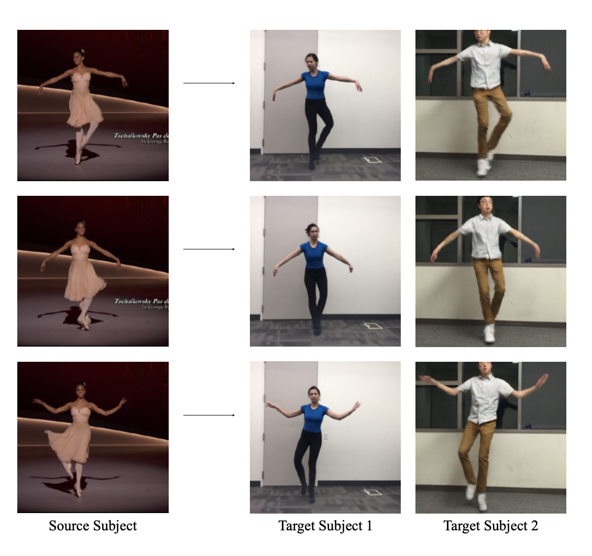
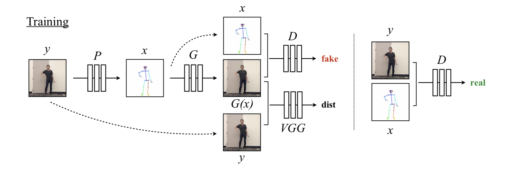
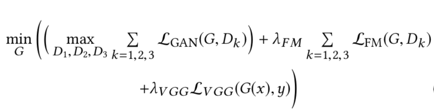
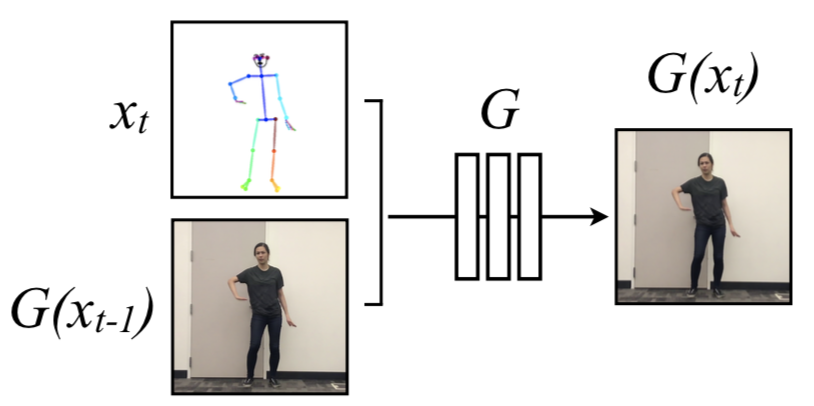
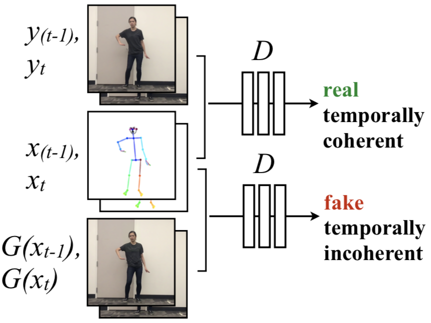

Everybody Dance Now --
Taha Merghani, Raghav Raj Mittal, Vishvak MurahariSpring 2019 CS 7643 Deep Learning: Class Project
Georgia Tech
The code for this project can be found in this repository. The code has been adapted from the following open source repositories:
Boiler Code for setting up pix2pixHD
Pix2pixHD official implementation
Pose detection in Pytorch
Abstract
In this project, we attempt to recreate the paper 'Everybody Dance Now' for motion transfer from a source video to a target subject.

Example of motion transfer from source-video (left) to target-subjects (right)
Example of motion transfer from source-video (left) to target-subjects (right)
Introduction / Background / Motivation
What did you try to do? What problem did you try to solve? Articulate your objectives using absolutely no jargon.
In this project, we are trying to recreate a recent paper titled 'Everybody Dance Now' for 'do as I do' motion transfer. What this means is that given a source video of a person dancing (let's say, Bruno Mars), we wish to transfer the person's motions/performance to a target person (let's say you, the reader). The authors of the paper have not released their code, so it is our aim is to produce similar results to that of the paper.How is it done today, and what are the limits of current practice?
Majority of the early work in this domain produced results by manipulating existing video footage or speech of the target. For example, a nearest-neighbors search would output the frames of the target person that most closely resemble the input frame of the source person. Multiple new techniques were also adopted such as 3D motion transfer and unsupervised adversarial networks. More related work is explained in the Section 2 of the paper.Who cares? If you are successful, what difference will it make?
- The code from the paper is not public, so if we were able to product similar results, we could contribute to the open-source community.
- The applications of such technology are huge: film, TV, social media apps, music videos, advertising, memes. Essentially, it will allow videos to be produced in a relatively low-effort and cheap way.
- It obviously also makes a difference to us too, knowing that we were able to reproduce a paper of this nature in a short duration.
- 'Dance' becomes accessible. No one has to be a dancer to 'dance'. Everybody can dance now.
Approach
What did you do exactly? How did you solve the problem? Why did you think it would be successful? Is anything new in your approach?
For training, we would need to collect a video of the target person doing certain dance moves/motions in front of a static background. The length of this training video would be less than 20 minutes. Initially, we could simply use a youtube video of a person dancing to train the model. To train the model on ourselves though, we would need to record a video of ourselves too. Given the video is shot at 60 FPS (common option in modern cell phones), a 10 minute video will itself collect 36000 frames to train on. Such a video should be sufficient to train the GAN, but a higher FPS and a longer video (~20 minutes) would likely produce better results.To train this system, we will first collect 20 minutes of video of the target subject dancing. We will then run an open-sourced posed detector released by the authors of this paper to find the pose at each frame. We then post-process these poses using smoothing techniques mentioned in the original paper to remove jitter. This gives us a dataset mapping poses to actual images. Let us refer to this as (x,y) where x represents pose and y represents the image. Our goal then is to learn a generator which generates images of the target subject given a pose.
For our baseline, we will first generate images given a pose using a CNN based architecture specified in the original paper. We will also a train a discriminator which calculates the probability of the input image being real given the pose. We will train the generator and discriminator networks by optimizing the adversarial GAN loss. According to the authors, we know that that simply optimizing the GAN loss led to poor results. Therefore, once we implement the baseline we will add a few additional tricks used by the authors. These tricks have been explained below.

Architecture of pix2pixHD baseline
Architecture of pix2pixHD baseline
To stabilize training, we first realize that we are training on the (x,y) pairs of the target subject and we know that G(x) should be similar to y, where G and D represent the Generator and Discriminator networks respectively. Therefore, we can find the VGG fc7 embeddings of both G(x) and y and then optimize on the L1 loss between these embeddings. The authors propose that the internal representation of the discriminator should be similar when either G(x) or y is passed as input. Therefore, we can add a layer-wise loss which optimizes the L1 loss of layer-wise representations obtained with G(x) and y.

Final loss term
Final loss term
The authors propose another change in the generator architecture to make sure that consecutive frames generated by the generator are not jittery. To do so, the generator architecture is modified to take in an image in addition to the pose. Therefore, the generator generates two consecutive images at each time step. Therefore, for any timestep t we run the generator twice. We initially pass in the pose at t-1 and a zero image to the generator to get the image at timestep t-1. We then take this image and the pose at timestep t to generate the image at timestep t. The discriminator now takes in those two generated images along with their poses and tries to decide whether the image at the current time step is real or not. This essentially forces the discriminator to not only determine whether the image is real, but to also ensure temporal coherence between the current and past image.


Inputs to the new generator (left) and new discriminator (right)
Inputs to the new generator (left) and new discriminator (right)
After training the generator network on the target subject, we look at the source video and calculate a pose for each frame. We then use the learned generator and pass in the calculated pose along with the previously generated image to generate the next output image. We do this for each frame in the source video and the resulting output frames give us the final video with the target.
What problems did you anticipate? What problems did you encounter? Did the very first thing you tried work?
We initially thought that we would have issues with unstable GAN training and we might see issues like mode collapse etc. We also were a bit unsure on how the authors implemented temporal smoothing. It was a bit unclear from the section in the paper on which images the generator was being conditioned on during training. We were also a bit concerned on what kind of training data would work best for this scenario. For instance, it was not very clear if the training video had to be collected with a particular background or with any specific lighting conditions.We ended up encountering quite a few issues. We had quite a few issues using the open source pose detector (OpenPose). Luckily, we came across an open-source Pytorch implementation from the authors of OpenPose which we could easily use. We also had to use a very small batch size (batch size of 3) as the models involved were pretty large. This considerably slowed down training and reduced the speed at which we could iterate.
The first thing we tried didn't work! :( We initially tried an approach where we were conditioning the generator on the past generated image and we realized that the original implementation wasn't quite doing this. We explain this and the second approach in greater detail in the next section.
Experiment and Results
How did you measure success? What experiments were used? What were the results, both quantitative and qualitative? Did you succeed? Did you fail? Why?
In this case, the measure for success is qualitative. Our hope was that the output videos created be reasonable, smooth, and closely resemble the poses in the source video. We decided to run the model on the videos that the authors of the paper tested on. Specifically, we let the source video be Bruno Mars's That’s What I Like and compared our output video with the results by the authors. We also made sure to keep the source video the same when for both our baseline model (only Pix2PixHD) and the temporally smoothed model. This way, we could visually compare the outputs of our models to see which ones are qualitatively better.The first output we generated were obtained after training the baseline model. This model uses the regular Pix2PixHD architecture, which makes use of GANs in a conditional setting. The generator took in a semantic map which in our case, was the pose obtained by passing the real image through OpenPose. The discriminator then tried to distinguish between the generated image and the real image, given the same pose. A problem we faced when training the GAN was that training was slow. Pix2PixHD makes use of multiple, heavy ResNet blocks so even increasing the batch size past 3 caused GPU memory constraints. However, as mentioned before, there were ~36000 frames in the dataset, so the quality of output after just 2 epochs was very reasonable. As mentioned before, we do not make use of quantitative results for this project. The output, to be compared qualitatively later, is shown below. Just as a note, OpenPose generates partial poses for the first few frames of the source video (possibly because of the text overlay), which is why the output video seems extremely jittery until the text disappears.

Baseline Model: Result of motion transfer from source-video (left) to target-subjects (right) after 2 epochs

Baseline Model: Result of motion transfer from source-video (left) to target-subjects (right) after 16 epochs
In fact, we let the model run overnight upto 16 epochs. The results seem to deteriorate. Our belief is that this is not due to unstable GAN training, but rather due to global pose normalization issues. The height and the width of the source and target subjects are different, and more importantly, the source subject is standing further away from the camera in the source video than the target subject is in the training video. In such a case, some normalization will be required, perhaps by transforming the pose keypoints from the source to better agree with the shape and scale of the target subject. Since Bruno Mars is much smaller in the video, the pose generated is smaller, and the resulting generated image is also smaller. However, the generator also generates phantom limbs at the bottom of each frame, and this is a result of not doing this normalization. If we were to use global pose normalization, it would result in a bigger pose that more likely matched the size and shape of the target subject.
Next, we implemented the GAN architecture changes that the authors of the paper suggested. The generator was now run two times in succession and was conditioned on the pose as well as the previously generated image. The discriminator tries to distinguish between the 2 poses + 2 fake images, and the 2 poses + 2 real images, thereby enforcing temporal smoothing as well.
We were unsure of how the the original authors of the paper implemented the transfer step, as the explanation for this segment was vague. We know that for every time step t in the training process, the generator produced a fake image G(xt-1) conditioned on a pose Pt-1 and a zero image, and then passed the resulting fake image G(xt-1) along with the pose Pt to obtain the fake image G(xt). During transfer time, however, 2 different approaches could be taken.
In the first approach, we ran the trained generator G in a linear fashion, passing in a new pose and the previously generated image at every time step.
- At t = 1, we pass in the first pose P1 and a zero image, and obtain output frame G(x1).
- At t = 2, we pass in the second pose P2 and G(x1) to obtain output frame G(x2).
- At t = 3, we pass in the third pose P3 and G(x2) to obtain output frame G(x3).
- And so on...

Approach 1: Result of motion transfer from source-video (left) to target-subjects (right) after model was trained for 4 epochs
In the second approach, our transfer conditions more closely resembled the training conditions. For every time step t, the generator produced a fake image G(xt-1) conditioned on the pose Pt-1 and a zero image, and then passed the resulting fake image G(xt-1) along with the new pose Pt to obtain the output image G(xt).
- At t = 1, we ignore the output as no previous pose exists.
- At t = 2, we pass in P1 and zero image to get G(x1). We then pass in P2 and G(x1) to obtain the output frame.
- At t = 3, we pass in P2 and zero image to get G(x2). We then pass in P3 and G(x2) to obtain the output frame.
- And so on...

Approach 2: Result of motion transfer from source-video (left) to target-subjects (right) after model was trained for 4 epochs